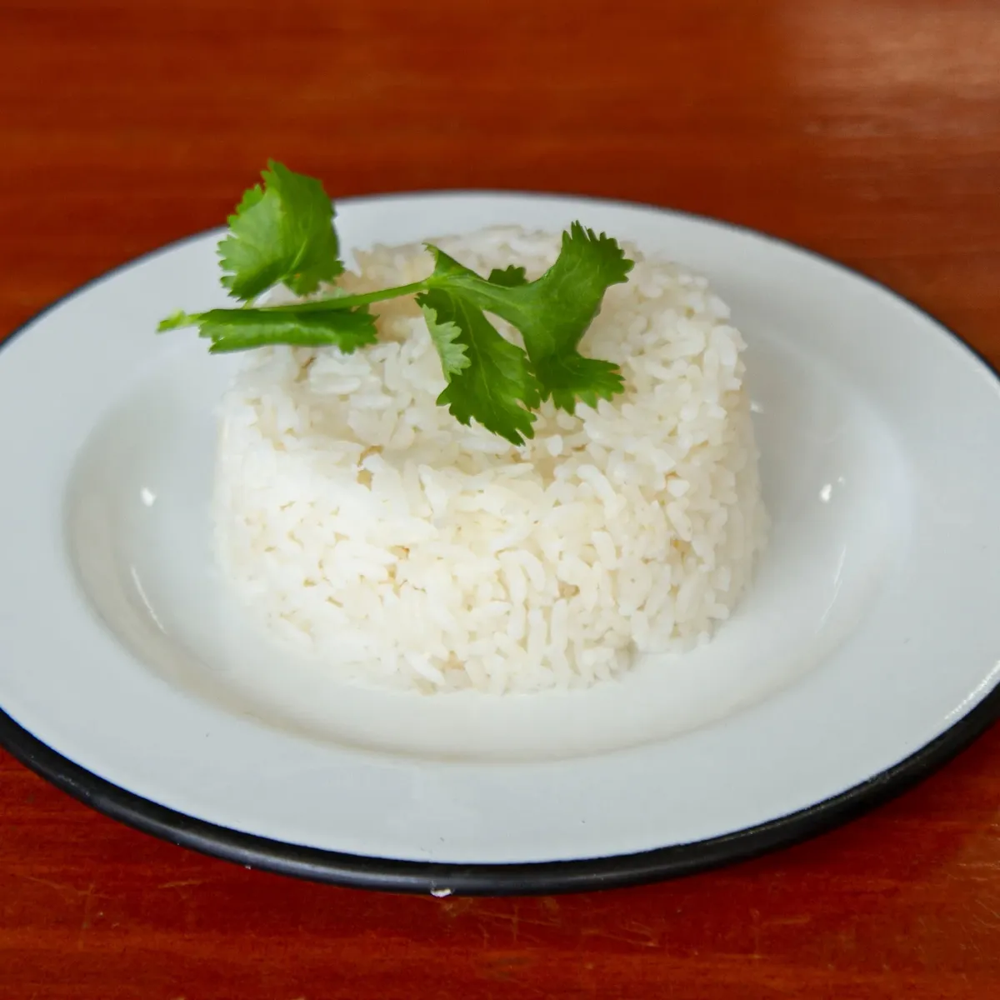

Arroz

Descripción
El arroz, uno de los granos más consumidos en el mundo, es un alimento versátil y fundamental en la cocina de muchas culturas. Desde la textura suave y esponjosa del arroz blanco hasta la riqueza aromática del arroz jazmín o basmati, cada variedad ofrece un perfil de sabor único. Además de ser una excelente fuente de carbohidratos, el arroz es una base ideal para una variedad infinita de platos, desde guarniciones simples hasta platos principales abundantes.
Ingredientes
Instrucciones
- Enjuaga el arroz bajo agua fría para eliminar el exceso de almidón, si lo deseas.
- En una olla, combina el arroz y el agua o caldo en la proporción adecuada según las instrucciones del paquete.
- Agrega sal al gusto y una cucharada de aceite o mantequilla si lo deseas.
- Lleva el agua a ebullición, luego reduce el fuego a bajo y tapa la olla.
- Cocina el arroz durante el tiempo indicado en el paquete, generalmente entre 15 y 20 minutos, o hasta que el líquido se haya absorbido por completo y el arroz esté tierno.
- Retira la olla del fuego y deja reposar el arroz tapado durante unos minutos.
- Con un tenedor, esponja suavemente el arroz para separar los granos y servir caliente como acompañamiento o como base para otros platos deliciosos.